Author: JOERG H. MUELLER, THOMAS NEFF, PHILIP VOGLREITER, MARKUS STEINBERGER, DIETER SCHMALSTIEG
Institution: Graz University of Technology, Austria
Link: https://dl.acm.org/doi/10.1145/3446790
Abstract
Motivation
- Temporal coherence has the potential to enable a huge reduction of shading costs in rendering
Current Work
- Existing techniques focus either only on spatial shading reuse or cannot adaptively choose temporal shading frequencies
Idea
- Temporal shading reuse is possible for extended periods of time for a majority of samples
- Approximate shading gradients to efficiently determine when and how long shading can be reused
1. Introduction
-
An important strategy to reduce shading load is to exploit spatial and temporal coherence
- Spatial coherence
- Checkerboard rendering,
- Foveated rendering
- Variable rate shading
- Motion-adaptive shading
- …
- Temporal coherence
- Temporal anti-aliasing
- Spatial coherence
-
Four unresolved research questions for shading reuse over longer periods of time poses:
- How do temporal artifacts affect the perceived image quality when reusing shading samples over time?
- Perception of shading differences
- Conducting a controlled user study to determine the perceived effect of shading artifacts due to temporal shading reuse for scenes with advanced shading and animations
- What are the limits of shading reuse in scenes with advanced shading and animation?
- Temporal coherence
- Analyzing the potential amount of coherence in shading and visibility over time
- How can we determine ahead of time when shading samples become invalid without actually reshading the samples?
- Gradients
- Analyzing analytical and numerical first-order approximations of temporal shading gradients and their ability to predict the magnitude of future shading changes
- Analyzing the spatial variation of the temporal shading gradient and show how to incorporate spatial information to better predict future shading changes
- Given sufficient temporally coherent shading samples, how can they efficiently be reused in practice?
- Framework
- A general-purpose framework for predicting shading changes and temporally reusing shading over time
- How do temporal artifacts affect the perceived image quality when reusing shading samples over time?
2. Related Work
-
Reduce shader invocations by exploiting shading coherence
- Foveated rendering
- Variable rate shading
-
Temporal coherence is commonly exploited by using information from previous frames for spatio-temporal filtering
- Temporal anti-aliasing
- Use exponential-decay history buffers for filtering
- Use the temporal variation of sampling position to achieve spatial anti-aliasing
- Temporal anti-aliasing
-
Shading gradients can be used to estimate the variation of shading and are thus often used in spatio-temporal filtering
- Guiding spatio-temporal upsampling filters
- Denoising filters
- Reconstruction in adaptive frameless rendering
- Spatial sampling
-
Temporal upsampling methods reuse previous shading result without filtering or accumulation
- Warps the image plane of the previous, fully rendered keyframe based on the latest headtracking update
- Advanced warping and reprojection techniques
- Render cache
- Reverse reprojection caching
- Use scene depth or motion vectors for dense 3D warping while reusing the shading from the last keyframe
- Temporal methods are based on the assumption that the temporal variation in shading is slow and as spatial reprojection errors accumulate over time, a frequent refresh of the cache is required
- A fraction of samples typically violate this assumption and thus lead to perceivable artifacts, when not shaded more often
-
To avoid spatial reprojection errors while reusing shading samples multiple times, shading can be generated in alternative spaces and resampled for display
- Example: Generation of depth of field and motion blur
- For efficiency reason, shading in alternative spaces requires GPU extensions
- Similarly, the shading cache has been designed to allow for spatio-temporal shading reuse in path tracing
- Texture-space shading methods have been popularized and have even been used for temporal upsampling on a VR client
- Cons: All these methods only allow for fixed temporal upsampling rate
- Example: Generation of depth of field and motion blur
-
Numerous image quality metrics try to model the human perception of images
- peak signal-to-noise ratio (PSNR)
- Provides an objective and easy to compute metric
- Failed to capture human perception
- structural similarity index measure(SSIM)
- Designed to more closely resemble perception
- IW-SSIM
- Made to SSIM to enhance the predictions of the metric
- HDR-VDP-2
- Try to model the visual system to some extent
- Adapt the metric for the evaluation of foveated rendering
- VMAF
- Combination of different metrics
- Especially useful for video game content
- FILP
- Derived from the manual method of comparing images by alternating between them and provides an error map showing where differences would be perceived between the two images in comparison
Major disadvantage above all: only compare images, disregarding any temporal artifacts, such as flickering
- peak signal-to-noise ratio (PSNR)
3. Perception of Shading Differences
-
Conducted a controlled user experiment
-
To determine the limits of keeping shading over multiple frames in scenes with advanced shading and animation
-
34 participants were shown two video clips, one generated with forward rendering as ground truth reference, and the other by reusing shading from previous frames and the participants were asked to rate the relative quality of the two video clips, following a pairwise comparison design
- As the order of clips was randomized, they did not know which clip was the reference.
-
From the rating, we compute an average relative quality score ($Q$), ranging from -2 to +2, where +2 means the reference is significantly better and +1 slightly better. 0 indicates that they have been rated equal
-
Compute the probability $p_{ref}$ of choosing the reference over the reuse approach
- A $p_{ref}$ of 50% indicates that there is no difference between the approaches
- $p_{ref}$ of 75% is referred to as 1 just-noticeable-difference (JND) unit
- Staying under 1 JND is considered high quality
-
For statistical analysis, use repeated-measures ANOVA and Bonferroni adjustment for post hoc tests
-
Test scenes:
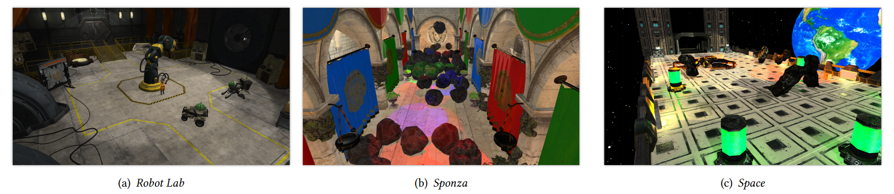
- Physically-based materials
- Animated models
- Animated light sources
- Dynamic shadows
-
-
Temporal forward rendering (TFR)
- To determine the perceived quality reduction caused by reusing shading samples
- TFR decouples the temporal changes in shading from other major effects that influence the shading reuse ability
- Temporal changes in visibility and spatial sampling
- Use a modified fragment shader to compute shading as if a fragment was shaded at a specific time in the past
- Recreate all input parameters to the shader, including view, light and model matrices, textures and shadow maps for up to 120 frames (2 s) in the past and compare the shading results to the new shading
- If the difference of a shading sample$(r,g,b)$ is above a certain threshold $T$, i.e., $T<\max(|\Delta r|,|\Delta g|,|\Delta b|)$, we consider the shading to be changed
- Shading, including gamma-correction and possibly tone-mapping, is computed and compared in floating point
- This threshold is an approximation of Weber’s law, which states that the just noticeable luminance difference is constant in relation to the base luminance
-
Result
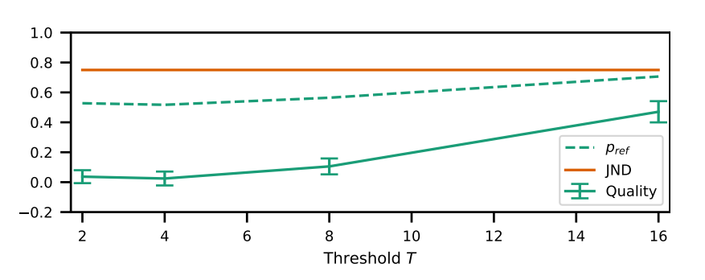
- Reusing shading samples that are slightly different does not reduce perceived quality
- For $T=2$ and $T=4$, $Q$ cannot be separated from 0.0 with confidence, and $p_{ref}$ is nearly 50%
- At a threshold of $T=8$, the mean quality is above 0.0, indicating that some participants see a minor quality deterioration. The distribution is still nearly balanced, with $p_{ref}$=55%
- At $T=16$, the distribution is just shy of 1 JND($p_{ref}$=75%). $Q$ is closed to 0.5
4. Temporal Coherence for Shading Reuse
4.1. Temporal coherence of visibility
- Project every sample of a current frame back to the previous frame and determine whether the sample was visible before
- Over 90% of samples stay visible between frames
- The most significant visibility disruption is caused by large camera movement or fast moving objects
4.2. Temporal coherence of shading
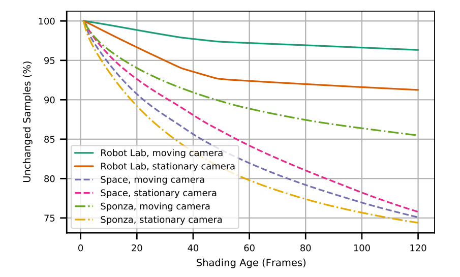
- Use temporal forward rendering to determine how shading behaves independently of changes in visibility and spatial sampling
- More than 75% of all samples change less than the color difference $T=8$ for 120 frames in the test scenes
4.3. Limits of applying temporal coherence
- Both the temporal coherence of visibility and the temporal coherence of shading demonstrate a very high potential for reusing shading over many frames
- Practical implementations need to also consider the spatial sampling of shading
- The drift of shading samples, their reprojection error and the required filtering
Evaluate two practical rendering approaches for shading reuse:
- reverse reprojection caching (RRC)
- RRC reprojects samples from the previous frame to the current frame, potentially accumulating spatial sampling errors
- The implementation runs in two passes: a depth pre-pass and a forward rendering pass that either uses the cache or reshades
- In order to avoid the accumulation of these errors, shading samples can be gathered in a temporally invariant space such as object space or texture space
- shading atlas (SA)
- Combine the shading atlas with the rendering pipeline of texel shading
- This method shades pairs of triangles in rectangular blocks that are dynamically allocated in a single texture, the shading atlas
- The location of the shading samples remains unchanged in the atlas, until the visibility of the triangles changes, or their resolution changes due to a level of detail change, in which case shading is recomputed
Evaluate result:
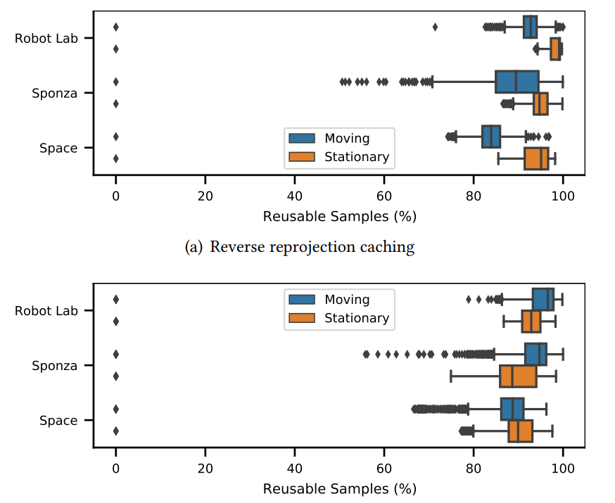
- Reverse reprojection caching accumulates spatial sampling errors over time, especially when the camera is moving
- The shading atlas reuse is independent of spatial sampling, and thus the reuse correlates better with the dynamics of the shading
- The shading atlas considers samples reusable only when an entire block is reusable, leading to a slightly worse overall reuse
5. Predicting Shading Changes
- Existing methods enable us to map shading samples from one frame to the next either through image space reprojection or shading in a temporally unaffected space, such as object space or texture space
- We require efficient prediction of the point in the future when shading samples will become invalid in order to know how long shading can be reused
5.1. Prediction with fixed upsampling rates
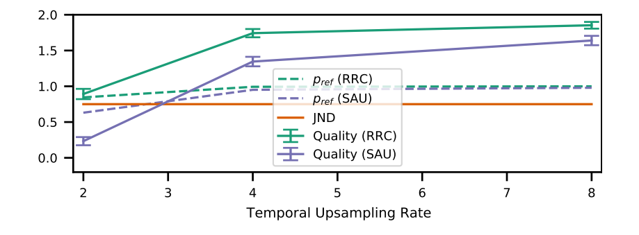
- Previous strategies rely on uniform temporal upsampling
- i.e., shading samples every $N^{\mathrm{th}}$ frame
- RRC
- Updates 16 × 16 pixel tiles with a constant refresh rate
- A constant fraction of all tiles is updated in each frame, leading to a fixed livespan for each tile
- SAU
- The livespan of cache entries is also constant, but every cache entry has an individual remaining time to live depending on when it became visible
- Evaluate RRC and SAU with the same user study design as described in Section 3
- Result
- Uniform upsampling is not able to leverage the potential for shading reuse well, even when reusing shading only once (2× upsampling)
- RRC at 2x temporal upsampling leads to noticeable differences in 82% of the cases
- For higher upsampling rates (4 and 8), all participants always noticed differences and reported image quality to be close to “significantly worse”
- A uniform upsampling frequency is not sufficient for longer shading reuse
5.2. Prediction with shading gradients
-
A first-order gradient analysis is often sufficient in the spatial domain
-
Consider a Taylor approximation of a shading function $s$ as an obvious choice for prediction
- A simple linear predictor can be formulated as a first-order Taylor expansion from time $t_0$ to $t$:
$$
s(t)=s(t_0)+s'(t_0)\cdot(t-t_0)+e(t)
$$with a residual error $e(t)$.
- Based on a color threshold $T$, we can predict a reshading deadlien
$$
d=t-t_0=\dfrac{T}{s'(t_0)}
$$
Analytic derivatives
- Handle scalar, vector-valued parameters, texture lookup, Poisson-sampled shadow maps
- Shader inputs such as camera, object or light transformations, are extended with their temporal derivatives
- All time-varying parameters where a future state can be calculated deterministically (such as prerecorded animations or physical simulations): Obtain their derivatives directly by augmenting the animation code
- User-driven inputs (Camera movement): compute gradient based on an extrapolation of the input
- Even though the derivatives can be computed alongside the shading, the overhead is non-negligible
Finite differences
-
An alternative to costly analytic derivatives
-
The simplest case: take the backward difference between two shading results
- It better approximates the limit of finite differences
- But always requires shading twice in a row
-
Computed between shading in consecutive frames or between frames that are further apart in time
-
More economical and has a potentially beneficial low-pass filtering effect on spurious shading changes
-
When a shading sample is first considered, shading must always be done twice
-
A first deadline for reshading is extrapolated from the initial gradient
-
Comparison of gradient methods
-
Evaluate these options for temporal forward rendering (TFR), using the previously found threshold $T = 8$ from the first user experiment
-
Render multiple frames of increasing shading age, resulting in frames with the same sample position, but increasingly outdated shading
- Use this data to retrospectively obtain the ideal deadline
- Starting from the current frame containing the correct shading result
- Determine the exact frame in the past where the shading difference exceeds the threshold $T$
- Analytical derivatives & finite differences: used to directly predict a future deadline
- Long-range differences: repeat the process to find the next frame in the past that exceeds the threshold
- Limit the search process to 119 frames into the past, effectively clamping the deadline in the range of 1 to 118 frames
-
Result
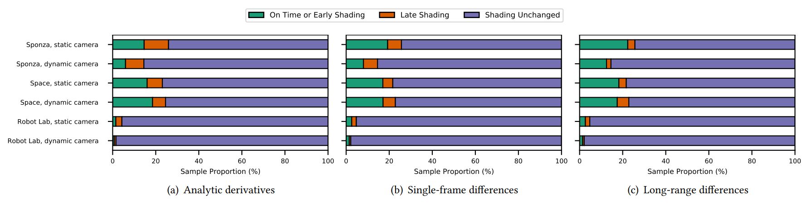
- Late shading: cause artifacts in the final image output and thus should be avoided
- Early shading: harm performance, but does not lower quality
- Ideally technique:
- avoid late shading completely
- keeping early shadings as low as possible
- Simple long-range differences (between two shading points) show the least amount of late shadings, while having only slightly increased early shading
5.3. Spatial filtering of temporal gradients
-
Propose a simple maximum filter in image space, inspired by the render cache and shading cache
- Make shading decision based on the estimated temporal gradients of neighboring samples
-
Evaluation
- Using TFR to isolate the effect of the spatial filtering, while avoiding other sources of misprediction, such as reprojection errors
- Using a downsampling factor of 8 x 8, followed by a convolution with a rectangular kernel size 9 × 9
-
Result
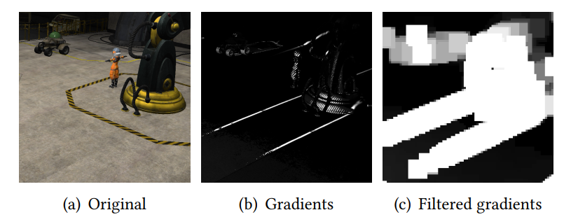
- The gradient filtering distributes the highly localized gradients of the shadow boundaries to the surroundings
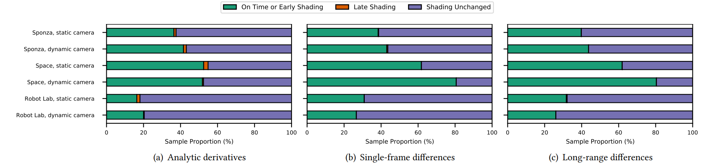
- Applying an image-space filter on top of the gradients strongly reduces late shading but increases early shading, leading to less reuse and less performance improvement
- Long-range differences are most attractive
6. Temporal adaptive shading framework
-
Temporally adaptive shading (TAS) framework
- Reliably avoids repeating redundant shading computations, while responding instantly to areas where rapid changes of shading occur.
-
Reuse unit (RU)
- To make the framework largely independent of the rendering algorithm to which it is applied
- RU is a group of samples for which a uniform decision is made on whether the samples will be shaded anew or shading will be reused
- The samples of these units are shaded together, and, consequently, must be stored together in the cache data structure
- The renderer determines visibility independently for each unit
- An RU can be a single pixel as in the case of reverse reprojection caching or a whole block within the shading atlas
-
Workflow:
-
Spatially-filtered shading gradients from the last frame are multiplied with the time elapsed since the last shading of each RU and compared to the threshold ($T$) to decide whether reshading is necessary. Newly visible units are always shaded for two consecutive frames to determine a gradient from finite differences
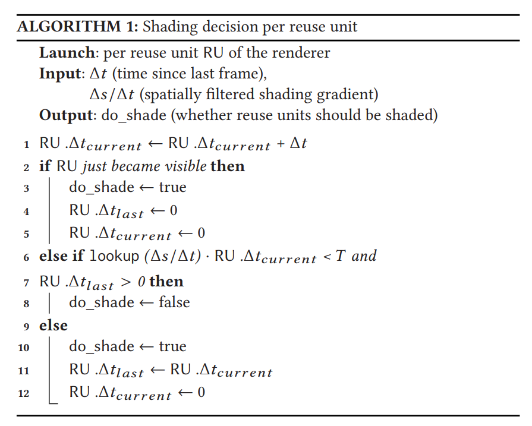
-
The shading is either reused, or the unit is reshaded. In the latter case, a new shading difference to the previous shading result is computed for each sample
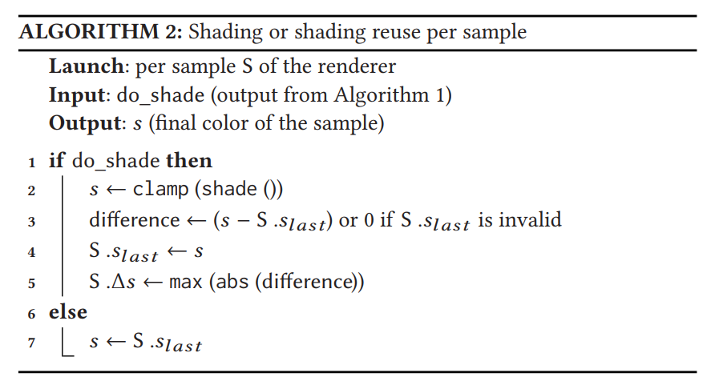
-
The shading gradient is estimated based on the shading difference, scaled by the time difference between them, and a spatial filter is applied to distribute the shading gradient information
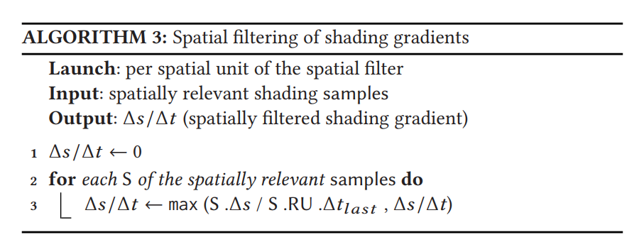
-
6.1. Temporally adaptive reprojection caching (TARC)
- Image-space pixels serve as reuse units
- Replace the periodic refresh of the reverse reprojection caching shader with the first two steps of the framework
- Store per-unit and per-sample variables in a double-buffered G-buffer
- The input buffers are reprojected, and the potentially altered values are stored in the output buffers
- Store the estimated shading gradient in the G-buffer during the depth pre-pass
- Implement spatial maximum filtering by downsampling the gradient buffer using a maximum filter with overlapping square kernels
- In comparison to standard reverse reprojection caching, TARC needs additional memory for screen size buffers to store the shading difference and the time since the last shading
6.2. Temporally adaptive shading atlas (TASA)
-
Using a texture-space representation for storing shading samples avoids the accumulation of reprojection errors faced by TARC
-
Convenient to define reuse units by proximity of shading samples on object surfaces
-
The reuse units in TASA correspond to two triangles packed into a rectangle of $2^N × 2^M$ texels, where each unit’s size in the atlas is determined based on its image-space projection
- Other granularities (e.g., 8x8 texels, per-object texture charts, micro-polygons) could be chosen
-
By retaining the maximum of all shading gradients across an entire reuse unit, a conservative object-space filter is applied to the unit at almost no additional cost
- The samples of a reuse unit are processed together
-
The resulting object-space filtering is particularly relevant when some of the shading samples are currently occluded in image space
-
Limiting the filter to the boundaries of a reuse unit fails to capture spatial gradients that cross the boundaries of adjacent reuse units
- Example: a shadow boundary may be creeping slowly across an entire surface consisting of multiple neighboring reuse units
- A solution: extend the object-space filter to support a convolution-style kernel larger than a single reuse unit
- But it’s a costly operation
- Another solution: concatenate the per-reuse-unit filter to an image-space filter that determines the maximum over direct image-space neighbors
- Very inexpensive
- Captures spatial coherence of perspectively close shading samples, which may not be apparent in object space
-
Resulting Pipeline:
- Exact visibility is computed per frame in a geometry pre-pass and stored in a G-buffer as primitive ID with corresponding shading gradients
- Reading the primitive ID, the atlas is updated such that it has room for the visible reuse units. The shading gradients are maximum filtered using a 2 × 2 window in image-space for each reuse unit to propagate the maximum gradient in an image-space neighborhood
- Shading decisions are made on all reuse units. Reuse units for which samples are newly allocated and reallocated in the atlas are always shaded, i.e., they are considered newly visible
- The shading workload is executed including the computation of the shading differences and shading gradients are directly maximum filtered per reuse unit
- The G-buffer is revisited for the final deferred rendering pass
-
The additional memory requirements include a copy of shading atlas to compute the shading differences, per-patch shading differences and times, and a screen space buffer for the spatial filter
7. Evaluation and Results
- Test TASA with a 16 MPx atlas (TASA16) and with an 8 MPx atlas (TASA8) to evaluate actual use
- To avoid sampling artifacts from the atlas when displaying the final image
- Use a threshold of $T=8$ in all experiments
- Aiming to stay below 1 JND
- Present detailed timing results in comparison to Forward+ rendering
- Experimental setup
- Three test scenes
- An image resolution of 1920 x 1080
- Extended the tested sequences to 15 seconds
- Run on Intel Core i7-4820K GPU and NVIDIA GTX 1080Ti using a custom rendering framework based on Vulkan
7.1. Reuse
-
In Section 4.3, the theoretically possible reuse with a perfect prediction of when to shade, resulting in a reuse of 80–90% for both TARC and TASA. About 1–5% of shading is due to changes in visibility
-
Actual reuse for the TAS implementations with a color difference threshold $T=8$:
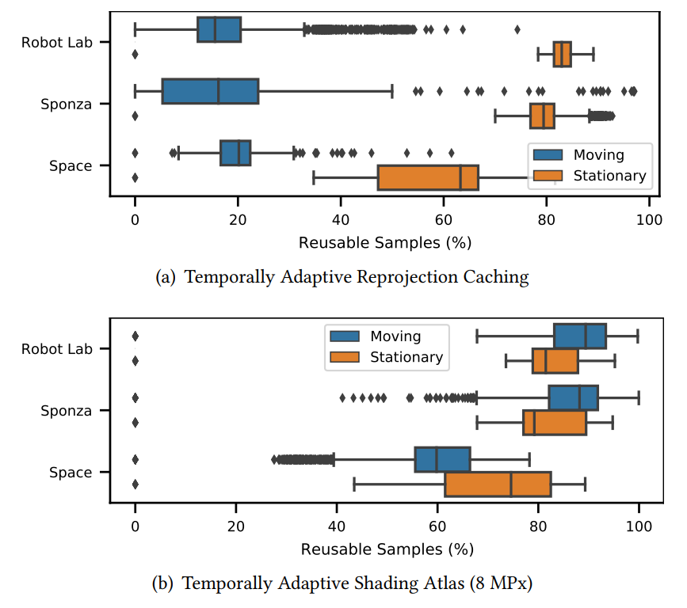
- TARC shows low reuse for dynamic camera movements
- The reprojection error for camera movements also effects shading gradient predictions, which are slightly too high and, in combination with the spatial filter, invalidate shading often
- While a smaller filter size would increase the reuse potential, it leads to clearly visible artifacts due to missing shading in some scenes
- A better reprojection filter for gradients and an adaptively sized image-space filter may increase reuse potential for TARC
- More advanced filtering and filter size adjustments would also increase overheads
- TASA is able to retain a high amount of reuse in comparison to its ideal version
- The reuse reduction is similar for both stationary and moving cameras, underlining that shading in texture space enables consistent addressing of shading samples
- View-dependent shading effects do not heavily influence shading reuse
- Only in Space with its many highly metallic materials, a moving camera significantly reduces shading reuse
- TARC shows low reuse for dynamic camera movements
7.2. Quality
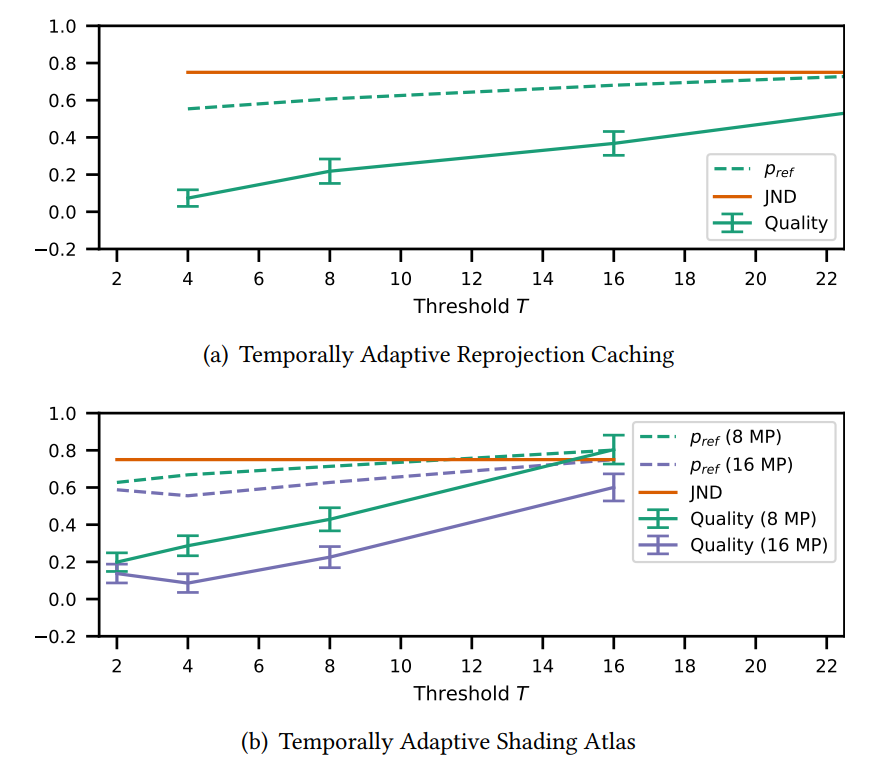
- For $T=4$， $p_{ref}$ is close to 50%, and $Q$ is at about 0.1
- For $T=8$, $p_{ref}$ is about 60%, still significantly below 1 JND, and $Q$ is 0.2, indicating a very high quality
- A setting of $T = 16$ is about twice as bad in $Q$ and very close to 1 JND, thus, we would suggest to use $T = 8$
- For $T = 32$, TARC is already above 1 JND, and $Q$ is close to “slightly worse”
- Unknown reason for the slight drop in $Q$ for TASA16 from $T = 2$ to $T = 4$
- as the confidence intervals overlap, this may just be a statistical outlier
7.3. Runtime
-
The overheads of TAS include computing shading differences, spatial filtering, and dynamically deciding whether to shade or not
- May lead to thread divergence during shading and thus reduce the efficiency
-
Measure the overhead of TARC and TASA in addition to the full shading
- TARC: between 14.5% to 16.9%
- TASA: between 2.3% to 5%
-
The actual speedups:
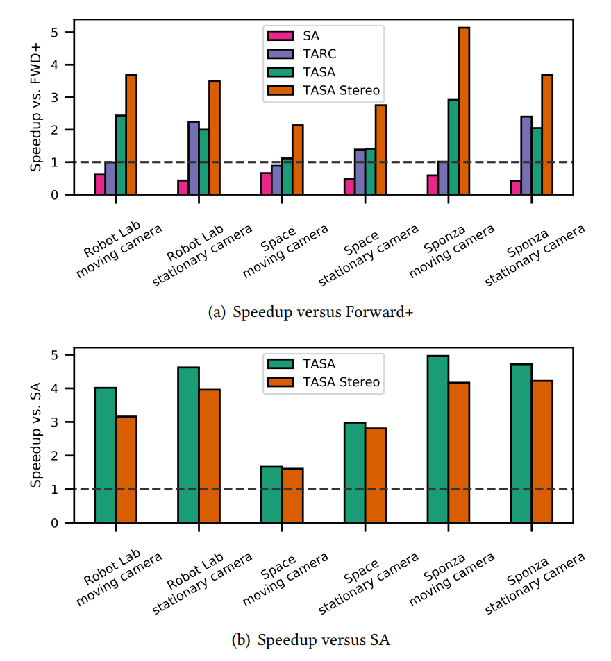
- Among the tested scenes, Space is especially difficult to speed up using temporal coherence, since most of the scene’s surface points are either very dynamic or belong to the sky box
- TARC does not improve over Forward+ for moving cameras, but it does have some considerable speedups between 1.38× and 2.4× when the camera is stationary
- The main focus is on the performance gains of TASA
- Able to reuse shading across the left and right eye buffers in VR stereo rendering
- TASA outperforms the other methods for all scenes, both in mono and stereo rendering
- The speedup in stereo mode over Forward+ is in the range 2 - 5× (1.1 - 3× in mono mode)
- TASA must compensate the overhead of its SA foundation
- SA alone is only around half the speed of Forward+ for monoscopic rendering, most likely due to its 8 MPx atlas size that is 4× the resolution of the final output image
Overall
- Adaptivity is key for temporal shading reuse
- Uniform temporal reuse strategies reduce shader invocations, quality drops quickly
- Using simple shading differences with spatial filtering for gradient estimates works well and is efficient
- Especially placing shading samples in texture space appears to be an efficient strategy for reusing them over longer periods of time
- Using an atlas that matches the screen resolution introduces spatial sampling artifacts and reduces sharpness
- TAS can easily compensate for these additional shading samples, leading to overall performance gains
7.4. Free-moving virtual reality experiment
-
Integrated TASA into Unreal Engine 4 and conducted a small user experiment in VR
- Adapted the Showdown VR Demo scene , a slow motion fly-through of a combat scenario involving several soldiers fighting a giant animated robot
- The comparison to the threshold $T$ is evaluated after tone mapping with the Academy Color Encoding System (ACES) Filmic Tonemapper used in Unreal Engine 4
-
For VR user experiment
- Slightly modified the scene by subdividing large primitives that exceed the maximum block size in the shading atlas
- Modified the scene to include fully dynamic directional lighting with cascaded shadow mapping, which was only approximated in the original scene
- Eight participants (6 male, 2 female, age 24 to 33, with VR experience) tried the SA baseline, followed by TASA configurations using the thresholds [4, 8, 16, 32, 64] and SAU with 4× and 8× upsampling in a randomized order
- Used an Intel Core i7-8700K with an NVIDIA RTX 2080Ti and displayed on an HTC Vive at a resolution of 1512 × 1680 per eye, using a fixed frame rate of 90 Hz
-
Result
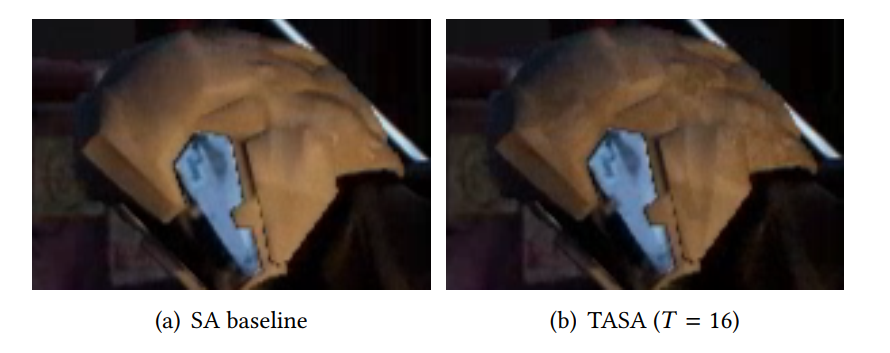
- For TASA with $T = 64$ and $T = 32$, all participants detected artifacts
- $T=64$ was “very bad”
- $T=32$ was “adequate with some annoying artifacts”
- For $T=16$, four participants reported an identical experience compared to the baseline, while the remaining four detected minor artifacts on shadows, reflective surfaces and the soldiers in the scene
- For $T=8$, six participants reported an identical experience compared to the baseline, while two participants were still able to identify minor artifacts on the soldiers
- For $T=4$, no participant was able to detect any visual artifacts, and all participants reported an identical experience compared to the baseline
- For TASA with $T = 64$ and $T = 32$, all participants detected artifacts
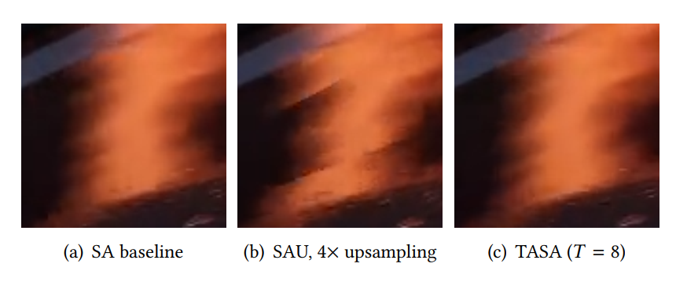
- For SAU with 4× upsampling, four participants reported artifacts related to “jittery” and “flickery” motion, and they reported “low frame rate” for the reflections
- For SAU with 8× upsampling, all but one participant reported major artifacts of reflections and shadows, as well as major discomfort, particularly describing the experience as “very uncomfortable when moving around”
- One participant even reported a mild case of motion sickness
- Constant temporal upsampling is more likely to be perceived as jittery, which according to the participants is more discomforting and distracting than the artifacts of TASA, even for large thresholds
- TASA with $T = 8$ resulted in a mostly identical experience to the baseline
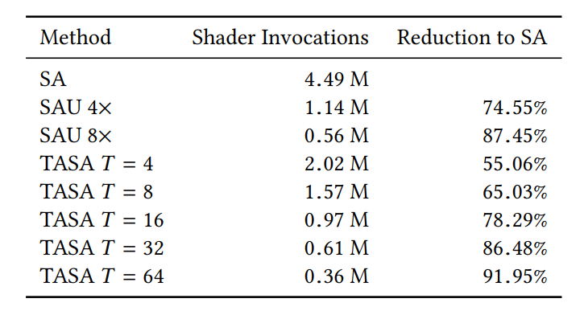
- TASA provides a more optimal performance-quality tradeoff compared to SAU
8. Discussion and Conclusion
- Investigate how shading reuse is perceived and could benefit rendering, considering visibility, spatial sampling and temporal behavior of shading, separated and combined
- Evaluated the perception of outdated shading using a rendering approach that separates shading from visibility and spatial sampling effects, finding that a shading difference of 3% ($T = 8$ after 8-bit quantization) is not noticed by study participants
- Even in highly dynamic scenes, many shading samples stay valid for extended periods of time, when considered independently of visibility and spatial sampling
- There is a potential of typically more than 80% shading reuse from frame to frame even in highly dynamic scenes at 60 Hz
- The higher frame rates of VR increase this potential further
- Accumulating spatial resampling errors limits the temporal reuse
- Using texture-space caching of shading samples instead
- Fixed upsampling techniques lead to noticable artifacts even at low upsampling rates
- Extrapolating shading differences works very well when combined with a simple image-space filter for capturing spatio-temporal effects
8.1. Limitations
-
The simple box filter with a rather big kernel size used in TARC leads to considerable amounts of unnecessary shading
- A more advanced spatial filter could consider spatial gradients such as optical flow to resolve these issues at the cost of increased runtime and complexity
-
While the existing measures capture most changes, some less frequent ones can still cause artifacts
- Example: discontinuous rendering or changes that propagate from outside the image or from an occluded area
- Depending on the use case, specialized cases such as discontinuous changes, e.g. to light sources, can be caught on the scene object level
- A more general solution to capture artifacts from discontinuous shading could speculatively update samples that are not due yet
-
Evaluation is based on a single threshold applied to the per-channel maximum RGB color difference after tone mapping
- The threshold might be too conservative in certain areas of the HDR spectrum and overlook additional gains
- A more advanced method may be necessary
-
A method for deriving the threshold for noticeable differences from the perception of the human visual system has the potential to lead to further temporal savings
- This can possibly be done in a different color space or in the high dynamic range space before tone mapping
- Example: a higher threshold could be used for dark pixels that are close to bright ones, or a lower threshold needs to be used in dark areas where the visual system is more sensitive
-
The shading atlas shades pairs of triangles within rectangular blocks with power-of-two side lengths
- When the level of detail changes, a block of a different size is allocated and shading cannot be reused
8.2. Future work
-
Temporal reuse and TAS can be applied to other rendering techniques, including global illumination algorithms and ray-tracing
-
For the overall speedup, it is important to not only consider the non-shading workload, such as the geometry stage, but also pre- and post-processing, which do not necessarily lend themselves to shading reuse
- Motion blur and depth of field benefit greatly from spatial shading reuse, especially in object or texture space as shown by stochastic rasterization literature
- Many of the currently used preand post-processing techniques approximate global shading effects, such as shadows and reflections
- If, by virtue of shading reuse, more time can be spent on the samples that actually require shading, this benefits the trend for moving global effect computation from post-processing to ray-tracing
-
In the worst case (discontinuous view change), the whole scene has to be shaded, this can lead to a higher variability in frame rate: Only some frames can be accelerated; others remain at the baseline speed
- The absolute frame time variability was unchanged in comparison to the baseline, while the mean frame time was reduced
- The frame time variability depends mostly on the complexity of the current view
- Lower frame rate variability could be obtained by using TAS as an oracle for a scheduling technique, which uses the predicted shading differences as priority, instead of making decision based on a fixed threshold
-
TAS can be easily combined with spatial reuse of sampling, such as variable rate shading, foveation and checkerboard rendering
- Bring more physically correct shading and fewer approximations that require pre-processing steps, like rendering shadow maps, or post-processing, like screen-space effects in deferred rendering